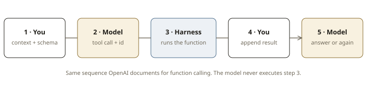

Lesson 0002 · Phase 1: Foundations · ~12 minutes
The anatomy of one step: call → execute → observe.
An LLM produces tokens. It cannot search, refund, or read a file. When it “uses a tool,” it is emitting a request — a structured blob that says “please run this function with these arguments.” Your code, the harness, is what actually runs.[1]
OpenAI is blunt about the split of labor: “The API will not actually execute any function calls. It is up to developers to execute function calls using model outputs.”[2] Anthropic says the same from the other side: Claude never sees your implementation — only the schema you provided and the result you returned.[3]
OpenAI documents the canonical flow as five beats. Memorize this sequence; every framework is a costume on top of it.[1]

get_weather("Paris"){"temp": 25}call_idWillison’s teaching version of the same loop is even plainer: the system prompt tells the model how to emit a tool tag, the harness regexes (or, in production, parses JSON) that tag out, runs the function, and stitches the result into the next prompt.[3] Modern APIs hide the tags behind tool_calls / tool_use fields. The mechanics did not change.
The model may request several tools in one turn. Each call has an id (call_id on OpenAI, tool_use_id on Anthropic). You must return one result per call, even if you skipped or failed it.[1] Dropping a result is how loops desynchronize — the model thinks a tool is still in flight.
The five beats are cheap to nod at and expensive to feel. Step through a scripted weather clerk. Nothing here calls an API — the model is fake; the split of labor is real.
Simon Willison’s consensus definition from lesson 0001 — an LLM agent runs tools in a loop to achieve a goal — is this five-beat cycle with a stopping condition.[4] Memory, planning, multi-agent, frameworks: all of them either (a) change what goes into the context before step 1, or (b) change what the harness does at step 3. None of them replace the loop.
Cover section 2. Four questions; instant feedback. Equal-length options, no formatting tells.
1. Who actually runs the function when a model “calls a tool”?
2. After executing a tool, what must you send back to the model?
call_id / tool_use_id. The transcript of call + result is the model's short-term memory of that step.3. A model emits two tool calls in one turn. You run only the first. What should you do?
4. Which statement is the clean split of labor?
OpenAI — Function calling. Read “How it works” and “The tool calling flow.” ~15 minutes. Optional: Willison’s How coding agents work (the teaching version of the same loop, ~10 min).
On paper: two turns. The model emits a call id; the harness runs the tool and returns that same id. If you cannot say who does which beat, reread section 1 before 0003.